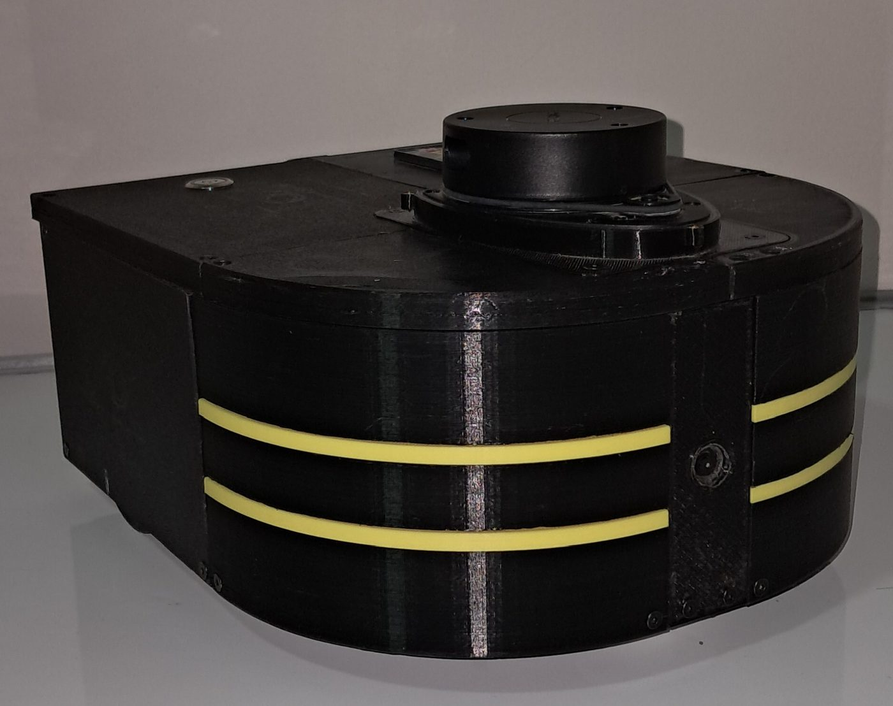
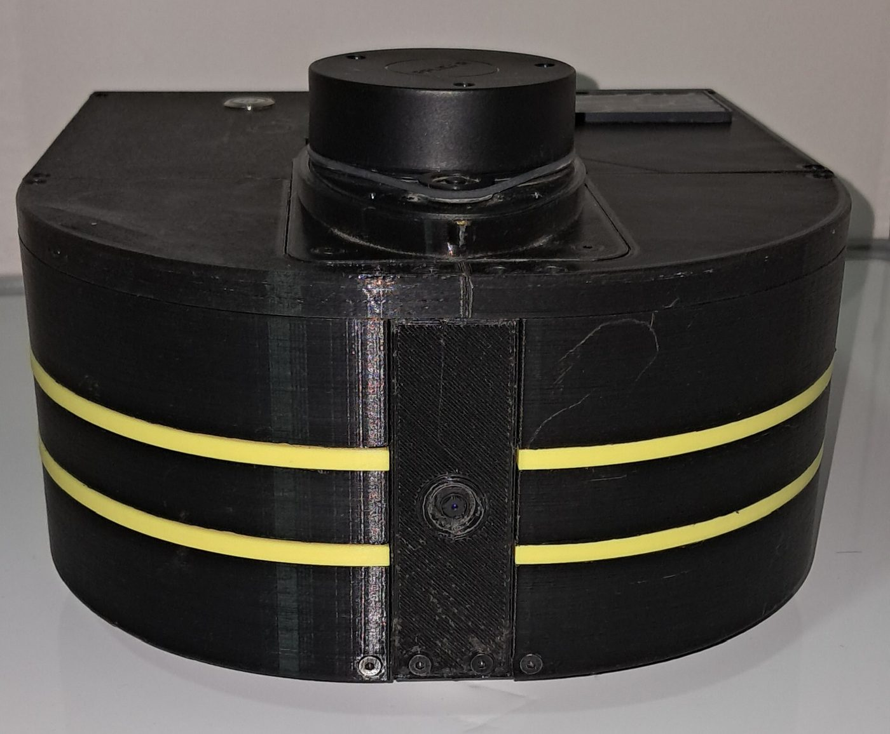
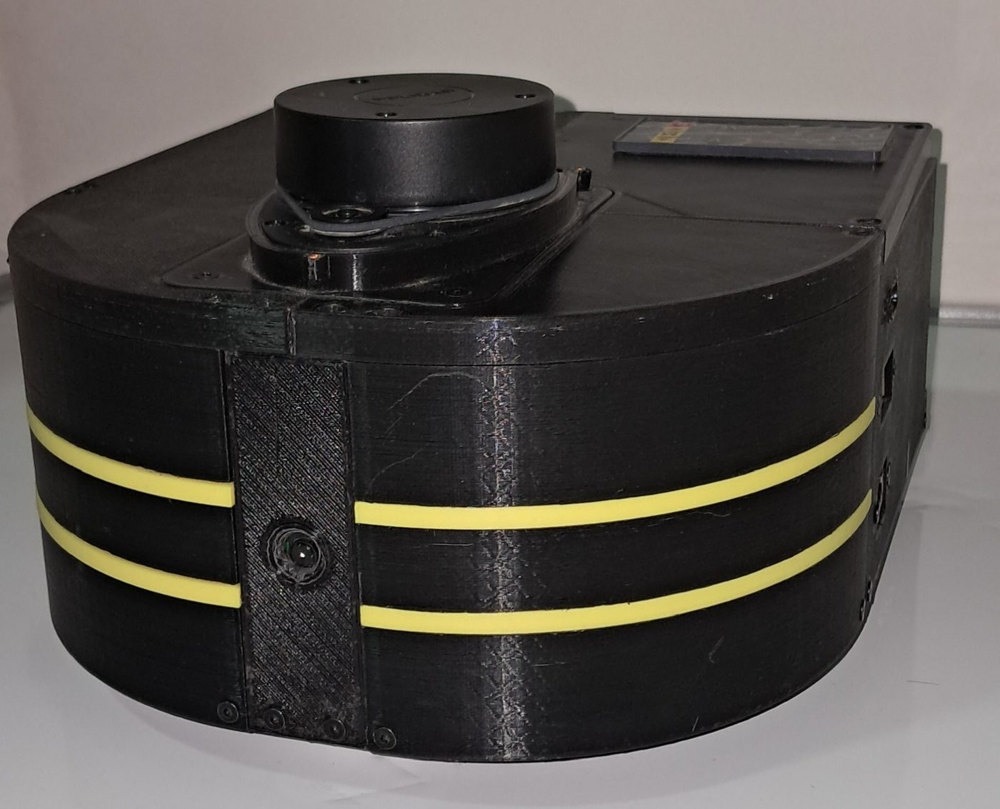
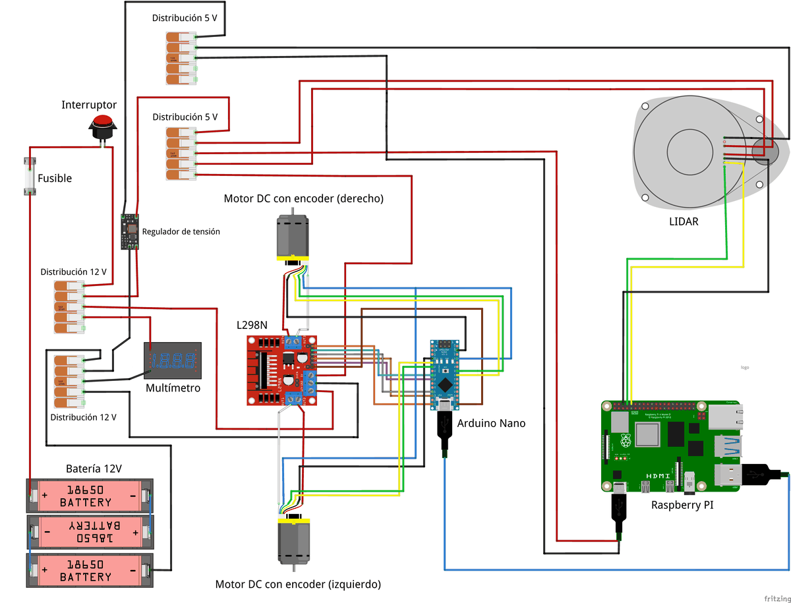
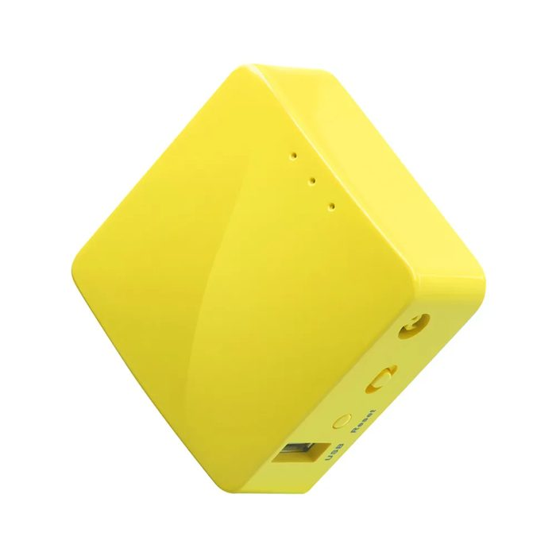

Botón de hombre muerto
La conducción manual con un mando inalámbrico solo envía órdenes mientras se mantiene presionado un botón. Si la persona lo suelta, el robot se detiene.
El contexto
Un chasis impreso en 3D, dos motores, un láser que gira y tres procesadores que se reparten el trabajo según la rapidez que necesita cada tarea. Este tema recorre el robot por dentro, desde la batería hasta la red.

El robot divide su trabajo en tres niveles. Un Arduino Nano controla las ruedas varias decenas de veces por segundo, una Raspberry Pi 4 hace de puente con ROS 2 y calcula la odometría, y un computador portátil mapea, navega y explora. Los motores y la electrónica comparten la batería, pero cada uno recibe su propia tensión para que los motores no perturben a los computadores.
La locomoción usa dos motorreductores JGA25-370 de 12 V, cada uno con un encoder de cuadratura que cuenta su giro, y una rueda loca de apoyo. Un Arduino Nano lee los encoders y ejecuta el control de velocidad de cada rueda, y un driver L298N entrega la potencia a los motores. Una Raspberry Pi 4 ejecuta la interfaz con ROS 2, lee el láser RPLidar A1 y se comunica con el computador 1.
Imprimí el chasis y las cubiertas en PLA+, un plástico común en impresoras 3D domésticas, a partir de un diseño abierto de robot aspiradora publicado en Thingiverse 2. Una forma de aspiradora es baja y compacta, deja el láser libre arriba y cabe por pasillos estrechos.



Cuatro números describen al robot para el software, y aparecen una y otra vez en esta guía. El radio de rueda es 0,0335 m, la separación entre ruedas 0,188 m, el encoder entrega 1980 pulsos por vuelta de rueda y la interfaz con ROS 2 trabaja a 30 ciclos por segundo 1. Esos mismos valores alimentan al robot real y a su gemelo en simulación, como se explica en El gemelo digital.
El robot no usa cámara ni unidad inercial. En las fotos se ve un lente montado en el frontal, pero la percepción que evalué se basa solo en el LiDAR 2D y en los encoders.
Un motor que arranca pide de golpe mucha corriente y llena la línea de alimentación de ruido eléctrico. Si la Raspberry Pi bebe de esa misma línea sin protección, puede reiniciarse justo cuando el robot empieza a moverse. Por eso la plataforma tiene dos dominios eléctricos 1.
El dominio de potencia usa el bus de 12 V de la batería para mover los motores a través del L298N. Del mismo bus, un módulo reductor de 25 W genera un riel regulado de 5 V para la Raspberry Pi, el Arduino, el láser y los periféricos. Un interruptor y un fusible protegen la entrada, y un pequeño visualizador muestra la tensión y la corriente en la cubierta.

Las señales viajan por otro camino. El Arduino y la Raspberry Pi se hablan por un cable USB que funciona como puerto serie, y el láser se conecta a un puerto serie de la Raspberry Pi. Para que cada dispositivo conserve su nombre aunque se reconecte, unas reglas del sistema operativo los fijan. El Arduino aparece siempre como /dev/motor_controller y el láser como /dev/rlidar_gpio 1.
El robot solo no explora. Es una arquitectura distribuida en la que cada equipo hace lo que mejor le calza a su ritmo y a su capacidad de cálculo 1. El argumento es simple. Lo que debe ocurrir decenas de veces por segundo sin fallar, como leer un encoder y corregir un motor, va en un microcontrolador dedicado. Lo que necesita memoria y procesador, como optimizar un mapa o planificar una ruta, va en el computador.
Muchos robots usan este mismo reparto. El TurtleBot 3 combina una Raspberry Pi con una placa OpenCR que controla sus motores 3, y los drones que usan PX4 separan el controlador de vuelo de un computador acompañante que ejecuta tareas pesadas como la visión 4.
ROS 2 es un conjunto de bibliotecas y herramientas para armar sistemas robóticos con piezas independientes 5. Cada pieza es un nodo. Los nodos conversan por tópicos, que funcionan como canales de radio con nombre. Unos transmiten en un canal y otros lo sintonizan, sin saber quién está al otro lado. Eso permite cambiar una pieza sin tocar las demás.
Además de tópicos existen servicios, para preguntas con respuesta, y acciones, para tareas largas que informan su avance. Las metas de navegación viajan como acciones, un detalle que será clave en Explorar por fronteras. Por debajo, el estándar DDS descubre los nodos en la red y negocia la calidad de servicio, así que los programas pueden repartirse entre varios computadores sin un nodo maestro central 5.

La Raspberry Pi y el computador ejecutan la misma distribución de ROS 2 y se comunican por una red Wi-Fi dedicada, armada con un pequeño router de viaje y direcciones IP fijas 1. El middleware registrado es CycloneDDS.
Una red propia evita depender de la red de la universidad, donde el descubrimiento automático de DDS suele estar bloqueado o mezclado con otros equipos. Es una decisión barata que ahorra horas de depuración.
Cuando la navegación decide que el robot debe avanzar a cierta velocidad, esa orden cruza tres equipos y tres conversiones antes de mover una rueda. Presiona el botón para seguirla paso a paso.
Hay dos relojes que no están sincronizados. La interfaz de la Raspberry Pi envía referencias y pide los encoders 30 veces por segundo. El firmware del Arduino programa su control cada 33 ms con su propio reloj. Que las frecuencias coincidan en número no significa que estén alineadas en el tiempo 1.
Se hablan con un protocolo de texto por el puerto serie, con comandos de una letra. Durante la operación normal se usan dos. El comando m fija la referencia de cada rueda y el comando e pide los conteos acumulados de los encoders 1.
| Comando | Qué hace | Responde |
|---|---|---|
e | Lee los conteos acumulados de los encoders izquierdo y derecho. | dos enteros |
m | Fija la referencia de cada rueda en pulsos por ciclo. Con ambas en cero, detiene los motores y reinicia el control. | OK |
k | Fija la referencia en m/s. Lo usaron los scripts de captura y sintonía. | OK |
j | Informa la última velocidad medida de cada rueda, en m/s. | dos valores |
o | Aplica un PWM directo a cada motor, sin control. Sirvió para identificar el modelo de las ruedas. | OK |
z, u, n | Cargan ganancias por rueda o comunes, y leen las ganancias guardadas. | OK u ocho valores |
En el robot real leo el RPLidar A1 con un nodo que escribí para este trabajo, en lugar del controlador del fabricante. Se comunica a 115 200 baudios por el puerto serie de la Raspberry Pi 1. Al arrancar reinicia el sensor, consulta su estado de salud y no publica nada si el sensor informa un error. Es una forma sencilla de fallar con seguridad.
Cada 50 ms lee lo que llegó, descarta los paquetes que no pasan la verificación del protocolo y agrupa las mediciones por vuelta. Una vuelta se publica solo si reúne al menos 180 mediciones. Luego la reparte en 230 sectores de unos 1,57°, guarda la distancia más corta de cada sector y deja como infinito lo que está fuera de 0,15 a 12 m. También invierte el sentido del ángulo para respetar la convención de ROS, donde los ángulos crecen en sentido antihorario 6.
Hay un límite conocido. Cada barrido lleva la hora en que se publicó, no la de su primera medición. Por eso los nodos que lo usan lo asocian a una posición del robot algo posterior a la real, y el desfase crece con la velocidad, sobre todo en los giros. Su efecto sobre los mapas no se cuantificó. En un sistema repartido entre dos equipos, además, conviene sincronizar los relojes de ambos antes de mapear, porque cada mensaje se ubica en el tiempo con esas marcas.
Un robot que se mueve solo tiene que poder detenerse aunque falle el software que lo guía. Este prototipo tiene tres mecanismos, y cada uno cubre una falla distinta 1.
La conducción manual con un mando inalámbrico solo envía órdenes mientras se mantiene presionado un botón. Si la persona lo suelta, el robot se detiene.
El multiplexor twist_mux elige una sola fuente de órdenes y da prioridad al mando sobre Nav2. Una persona puede retomar el control en cualquier momento.
Si el Arduino pasa 2 segundos sin recibir órdenes de movimiento, detiene los motores. Protege ante una caída de la red o de un nodo.
En la industria estas ideas se formalizan en normas de seguridad, como la ISO 3691-4 para vehículos industriales sin conductor. El tema se desarrolla en Lecciones de ingeniería.
Los montos son valores pagados entre abril de 2024 y julio de 2026, en pesos chilenos. Los kits de tornillería y cables se cuentan completos, aunque se usó solo una parte. Ningún monto incluye el computador, que es necesario porque ahí corren el mapeo, la navegación y el explorador 1.
| Componente principal | Costo (CLP) |
|---|---|
| Raspberry Pi 4 de 8 GB, carcasa y microSD | 91 759 |
| RPLidar A1 | 83 324 |
| Batería de 12 V y 3000 mAh | 25 658 |
| Módulo reductor DC-DC de 25 W | 18 858 |
| Dos motorreductores con encoder y rueda | 18 038 |
| Arduino Nano con placa base | 8 000 |
| Driver L298N y rueda loca | 4 893 |
| Energía, montaje, filamento y cableado | 194 113 |
| Total del robot | 444 643 |
| Red, cargador, baterías de repuesto y accesorios | 137 804 |
| Total del proyecto | 582 447 |
El tipo de cambio es el promedio del dólar observado de octubre a diciembre de 2024, porque el 68 % del gasto se hizo ese año. Con él, el robot costó un 32 % menos que el TurtleBot 3 Burger y el proyecto completo un 11 % menos. El Burger trae unidad inercial y actuadores con controlador integrado, que este robot reemplaza con piezas separadas de menor costo 1. Lo que sí gana quien lo construye es acceso a cada capa del sistema.
| Paquete | Rol | Origen |
|---|---|---|
articubot_one | Modelo URDF del robot, configuración de control, SLAM, navegación y simulación. | Adaptado de Newans 7 |
diffdrive_arduino | Interfaz de ros2_control entre ROS 2 y el Arduino. | Adaptado de Newans 7 |
ROSArduinoBridge | Firmware para encoders, motores y control de ruedas. | Adaptado de Newans, bifurcación del Home Brew Robotics Club 7 |
explore_lite | Exploración por fronteras. | Adaptado de Alvarez, versión para ROS 2 del proyecto de Hörner 8 |
pid_config | Captura, identificación de cada rueda y sintonía por PSO. | Propio |
rplidar_serial_publisher.py | Lectura del láser por puerto serie. | Propio |
El uso de ros2_control en robots diferenciales de bajo costo ya tenía antecedentes que orientaron esta integración, como el robot Lidarbot 9. Si quieres recorrer el mismo camino, la serie de videos de Articulated Robotics en que se basan los paquetes adaptados es el mejor punto de partida. Está en Constrúyelo tú.
La plataforma educativa más usada con ROS reparte el trabajo igual que este robot. Una Raspberry Pi ejecuta ROS y una placa OpenCR, con microcontrolador y unidad inercial, maneja los motores.
Reparte el trabajo como este robot, entre un computador que piensa y un microcontrolador que actúa.
Fuente 3
En los drones con PX4, el controlador de vuelo mantiene estable la aeronave en tiempo real y un computador acompañante ejecuta tareas de más alto nivel, como visión o planificación.
Separa lo crítico y rápido de lo pesado, igual que el Arduino y la estación de trabajo de este robot.
Fuente 4